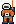
서가온
강하 책임 · 달 3세대내려간 사람을 전부 데리고 올라온다. 줄에 걸리지 않은 사람은 내려가지 않는다.
실루엣 · 위로 뻗은 주황 줄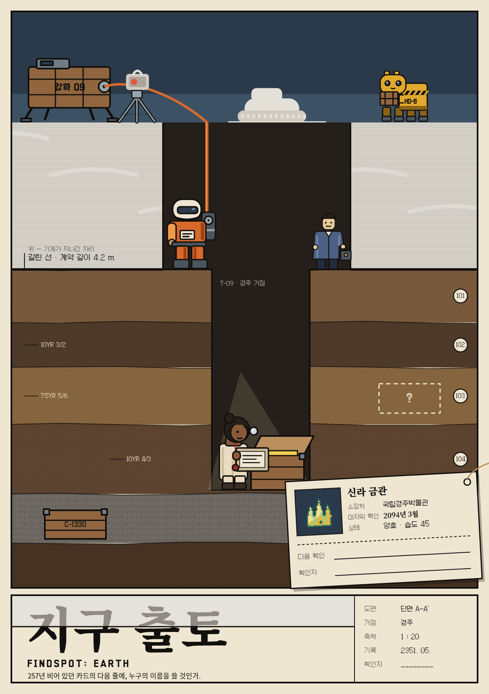
떠나지 않은 사람들이 묻어 둔 박물관을 파내는 도굴 팀이, 257년 비어 있던 카드의 다음 줄에 누구의 이름을 쓸지 정한다.
다음 확인자 칸은 257년 동안 비어 있었다.
상자마다 카드가 한 장 들어 있다. 위쪽은 2094년 3월에 누군가 흑연 연필로 적은 마지막 점검이다. 점선 아래는 비어 있다. 상자를 연 크루가 등재 기록과 대조를 마치면 그 칸에 날짜와 이름을 쓴다. 게임의 "감정"이 이 동작이다.
다음 확인 칸에 쓰는 이름이 선택이다. 팔면 산 사람의 이름, 전시하면 박물관, 쥐면 우리 팀. 결백한 이름은 없다.
팔려 간 물건의 카드에는 줄이 계속 는다. 화성의 거실에서 카드는 족보가 된다.
카드 위쪽은 게임 데이터의 실재 기록이고, 아래쪽만 픽션이다. 경계가 점선이다.
AI가 인류를 적으로 판정한 게 아니다. 자원 채굴이 자율 계약으로 넘어갔고, 계약서가 구역과 깊이와 주기를 정했다. 계약을 고칠 수 있는 사람이 먼저 떠났다. 멈추라고 할 사람이 없었다.
기계는 계약서에 적힌 깊이까지만 간다. 그 위는 한 방향으로 빗질된 회색 가루가 되고, 그 아래는 원래 층서가 그대로다. 이 경계가 갈린 선이다. 계약이 갱신될 때마다 선이 조금씩 내려가며 묻힌 상자를 드러낸다. 궤도의 관측망이 그걸 잡아 공개 채널로 뿌린다. 게임의 제보가 이것이다.
귀한 것일수록 깊이 묻었다. 그래서 깊이 팔수록 귀한 것이 나온다. 땅이 값을 올리는 게 아니다.
큰 그림의 좌표는 게임 도트 좌표에 10을 곱한 값이다. 16×24 도트의 한 칸이 큰 그림의 10×10이라, 게임 구석의 인물과 포스터의 인물이 같은 실루엣을 갖는다.
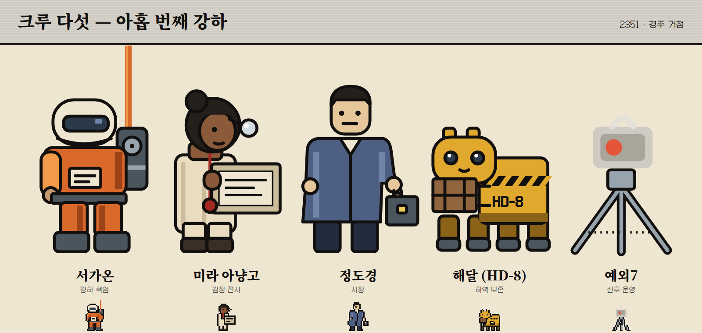

내려간 사람을 전부 데리고 올라온다. 줄에 걸리지 않은 사람은 내려가지 않는다.
실루엣 · 위로 뻗은 주황 줄"소실 추정" 도장을 4만 번 찍고 그 도장을 들고 나왔다. 빈칸을 실물로 메우고 모두가 보는 자리에 둔다.
실루엣 · 몸 앞의 기록판다음 달에도 이 팀이 있는 것. "우리가 안 팔면 저건 누구도 못 만져." 카드에 자기 이름을 쓰지 않는다.
실루엣 · 넓은 코트와 옆구리 상자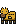
원하는 것이 없다. 독백하지 않는다. 다만 해달도 지구제이고, 언젠가 목록에 실린다.
실루엣 · 낮고 긴 몸, 귀 둘2094년 탈출 좌석을 계산한 계통. 명단의 "잔류" 열을 지우지 않는다. 머리에만 윤곽선이 없다.
실루엣 · 다리 셋, 선 없는 머리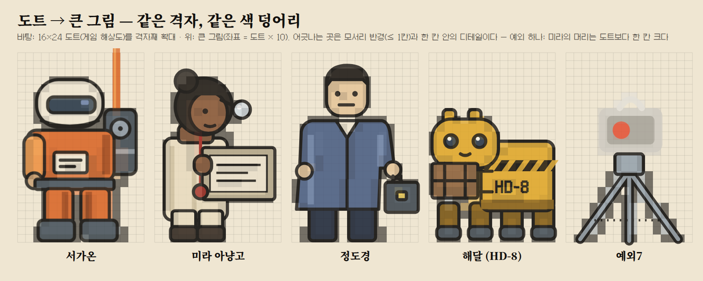
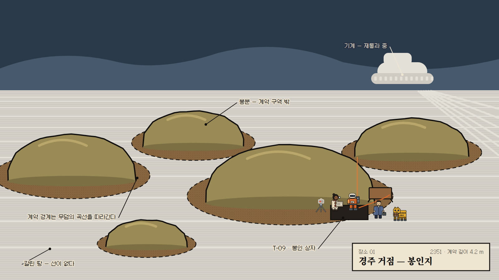
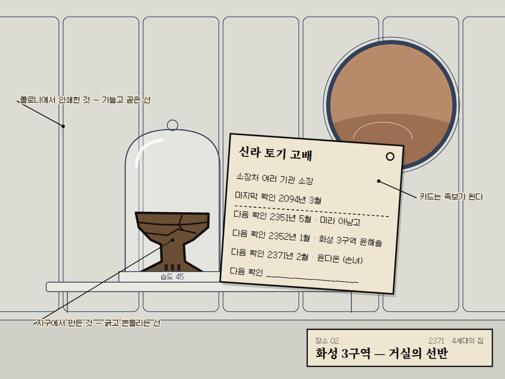
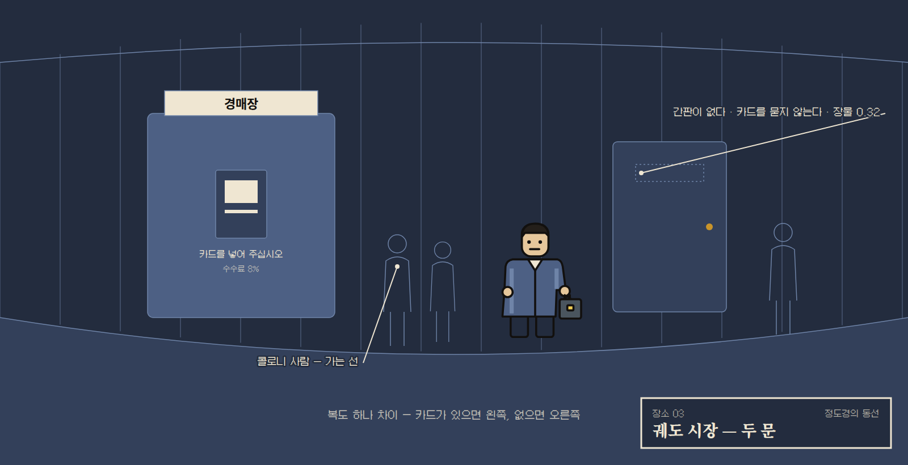
1막, 신호. 44초에 첫 감정이 끝나고 화면이 "마지막 확인: 2094년 3월"을 말한다. 79초에 첫 제보가 온다. 기계의 재통과가 상자 하나를 드러냈고, 여섯 팀이 같이 듣는다.
2막, 사는 사람. 팔 때마다 산 사람 한 줄이 붙는다. "화성 3구역, 4세대. 할머니가 경주 사람이었다고 한다." 미라는 이름이 이어지면 물건이 사는 거라 믿고, 정도경은 같은 사실을 팔린 거라 읽는다. 둘 다 틀리지 않았다.
3막, 빈칸과 명단. 도감의 회색 칸은 아직 열지 않은 상자이거나 이미 가루가 된 상자다. 예외7의 명단에는 "잔류" 열이 있고, 봉인자들이 거기 있다.
엔딩. 시장은 1위 팀을 "유물왕"이라 부른다. 반은 칭찬이고 반은 비아냥이다. 화면은 한 줄을 더 적는다. 당신이 모은 것 중 남들이 본 것은 몇 점인가.
| 시간대 | 누가 | 무엇 |
|---|---|---|
| 2094 | 떠나지 않은 한 사람 | 물건을 상자에 넣고 카드를 쓰는 날 |
| 2351 | 강하 크루 | 상자를 여는 날, 서명하는 손 |
| 2351~ | 콜로니의 한 가족 | 카드에 줄이 늘어나는 세대들 |
에피소드 하나 = 실존 유물 하나. 1,902종이 에피소드 풀이고, 신라 금관 이야기는 여섯 편까지만 있다(현존 수량 = 공급).
한 화 = 물건 하나. 스크롤을 내리면 갈린 선을 지나 층서로, 상자로, 카드로 내려간다. 첫 장면은 화성의 거실, 카드의 마지막 빈 줄에 이름을 쓰려다 멈추는 손녀.
2094년 경주, 탈출선 좌석을 받고도 타지 않은 한 학예사가 사흘 안에 상자 스물여섯 개를 묻는다. 확인자 칸에 연필이 닿았다 떨어진다. 257년 뒤 주황 줄이 내려온다. 왜 이름을 쓰지 않았는지는 답하지 않는다.
선 토큰이 라운드마다 한 칸씩 내려오고 지나간 칸의 상자는 가루가 된다. 유물 카드는 실존 데이터로, 종마다 현존 수량만큼만 있다. 연 카드의 다음 줄에 누구의 이름을 쓸지가 점수다. 반환 논쟁 유물은 전시만 된다.
실존 유물 옆에 가상의 카드 한 장. "마지막 확인: 이 박물관, 2094년 3월. 다음 확인 ___." 픽션이 실재를 덮지 않고 옆에 한 줄을 더한다. 기관 협업이 전제다.
방향 넷을 로그라인·장면·그림 한 장까지 밀고, 이 작업을 모르는 리뷰어 셋에게 제목과 고유명사를 가린 채 보였다. 세 명 모두 D안을 고르고 제목을 「지구 출토」로 붙였다. 기존 판(A)은 셋 모두에게서 "기존 작품과 가장 많이 겹친다"였고, 제목 「유물왕」은 5점 만점에 1·2·2점이었다.
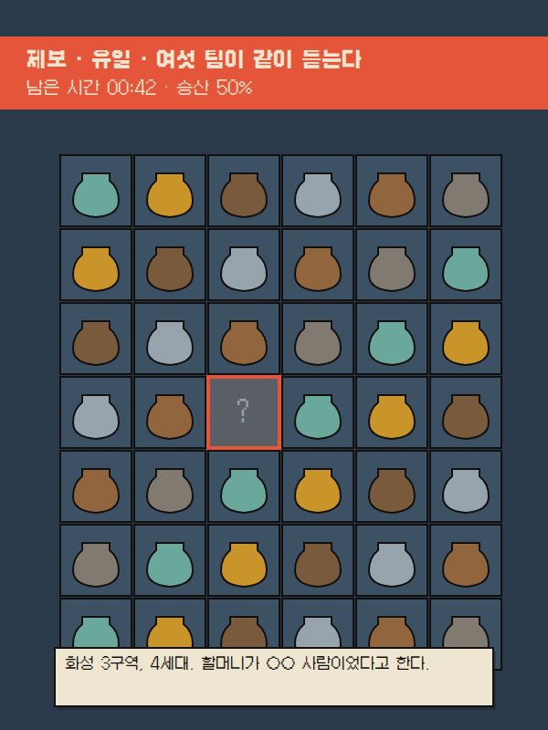
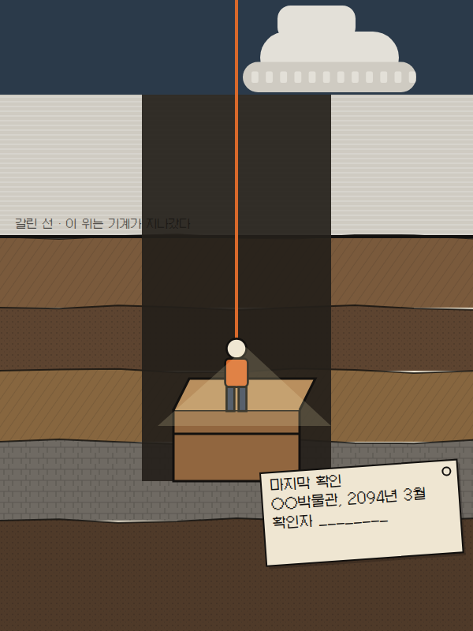
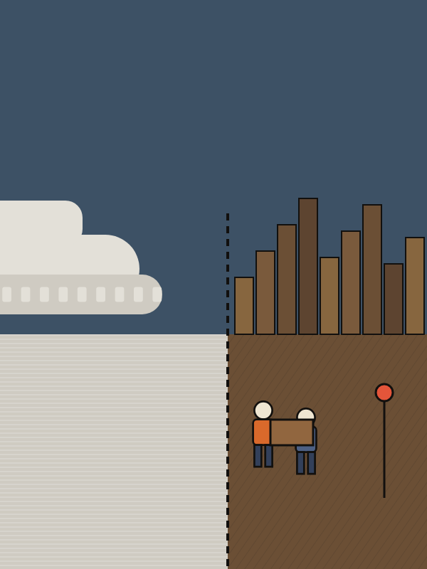
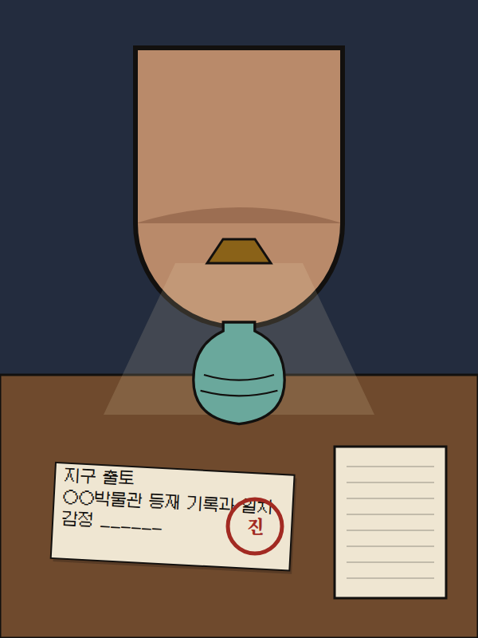
1·2·5번은 작성자가 아닌 리뷰어가 블라인드로 판정했다. 답 원문은 eval.md §38에 있다. 리뷰 뒤에 로그라인·키 비주얼 배치·해달·정도경을 고쳤고, 고친 뒤에는 다시 재지 않았다.
| 축 | 판정 | 근거 |
|---|---|---|
| 1. 고유성 | 부분 | 리뷰어 셋 모두 이웃(Motel of the Mysteries · Excavation Earth · 승리호 · WALL·E)과 갈리는 문장을 썼다. 그러나 셋 모두 그 차이가 카드 한 장에만 걸려 있다고 했다. |
| 2. 시그니처 | 통과 | 2차 셋 모두 같은 이미지(빈 서명란 카드)와 같은 문장("다음 확인 ___")을 골랐다. 주제는 대표하지만 세계 전체는 아니라는 단서가 붙었다. |
| 3. 이식성 | 통과(조건) | 피치 넷이 같은 세계로 읽혔다. 약한 피치는 보드게임(Excavation Earth와 겹침)과 전시(기관 수락 불가). |
| 4. 결속 | 통과 | 17행 중 끊은 결속 0. 새로 설명된 규칙 여섯, 그중 "깊이는 연대"의 모순 하나를 풀었다. 화면 적용은 v0.7.1에서 16/17 — 기록 카드·등록증·크루 한 줄(eval §39). |
| 5. 식별성 | 통과 | 게임 크기 도트 → 역할 15/15, 실루엣 → 도트 15/15. 예외7은 소품으로, 정도경은 흙 바탕에서 흐리게 읽혔다(정도경은 고침). |
| 6. 리스크 | 높음 2건 | 도굴 미화로 읽힌다(셋 모두), 실존 국보·반환 논쟁 유물의 상품화. 제목 상표와 실존 기관명은 법률 판단이 필요하다. |
ip/bible.md IP 바이블 — 게임 층과 바이블 층ip/narrative.md 로그라인 · 16시간 · 크루 아크 · 피치 넷ip/visual-guide.md 선 규칙 · 팔레트 · 도트 ↔ 큰 그림 변환ip/directions.md 발산 네 방향과 수렴notes/references-ip.md 조사 출처와 조사하지 못한 것eval.md §38 여섯 축 판정과 리뷰어 답 원문notes/decisions.md G118~G125ip/art/ 키 비주얼 · 로고 · 크루 시트 · 장소 · 검수 시트ip/src/build.mjs 그림을 다시 굽는 코드